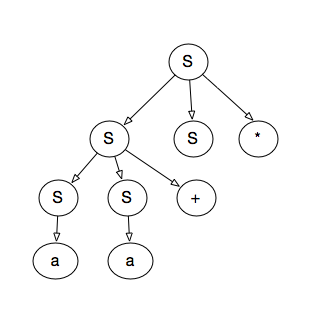

4.2.1
S = lm => SS* => SS+S* => as+s* => aa+s* => aa+a*
s = rm => SS* => sa* => ss+a* => sa+a* => aa+a*

- 否
- L = {11+}
4.2.2
S -> 0 S 1 | 0 1 和串000111
S = lm => 0 S 1 => 0 0 S 1 1 => 0 0 0 1 1 1
S = rm => 0 S 1 => 0 0 S 1 1 => 0 0 0 1 1 1
S -> + S S | * S S | a 和串 + *aaa
S = lm = + S S = + * S S S = + * a S S = +*aaa
S = rm = + S S = + S a = + * S S a = + * S a a = +*aaa
S -> S (S) S -> | ℇ 和串(()())
S = lm => S (S) S => ℇ (S) S => ℇ (S (S) S) S => (S (S) S (S) S) S =>
(ℇ (S) s (S) S) => ... => (()())
S = rm => S (S) S => S (S) ℇ => S (S (S) S) => S (S (S) S (S) S) =>
... => (()())
4.2.3
所有由0和1组合成的串， 并且每个0后面至少跟着1个1
S -> (0?1)*
S -> 0S0 | 1S1 | 0 | 1 | ε
S -> 0S1S | 1S0S | ε
S -> 01S | 1S0 | 1 | 0
不包含011
S -> 1*(0+1?)*
4.2.5
stmt -> if expr then stmt [else stmt]
| begin stmtlist end
stmtlist -> stmt [; stmtList]
4.4.1
S -> 0 S 1 | 0 1
-
提取左公因子
S -> 0A A -> S 1 | 1
-
消除左递归
S -> 0A A -> 0 A 1 | 1
-
预测分析表
| 非终结符号 | 0 | 1 | $ |
|---|---|---|---|
| S | S -> 0A | ||
| A | A -> 0 A 1 | A -> 1 |
S -> + S S | * S S | a
-
无左公因子
-
无左递归
| 非终结符号 | + | * | a | $ |
|---|---|---|---|---|
| S | S -> + S S | S -> * S S | S -> a |
S -> S (S) S | ℇ
-
无左公因子
-
消除左递归
S -> A
A -> (S) S A | ℇ
- 预测分析表
| 非终结符号 | ( | ) | $ |
|---|---|---|---|
| S | S->A | S->A | S->A |
| A | A -> (S) S A A -> ℇ | A -> ℇ | A -> ℇ |
S -> S + S | S S | ( S ) | S* | a
- 提取左公因子
S -> SA | (S) | a
A -> +S | S | *
=>
S -> SA | T
A -> +S | S | *
T -> (S) | a
- 消除左递归
i = 1
S -> TB
B -> AB | ε
i = 2
j = 1
A -> + S | TB | *
i = 3
j = 1
无需处理
j = 2
无需处理
最终得到的产生式：
S -> TB
B -> AB | ε
A -> + S | TB | *
T -> (S) | a
- 预测表
FIRST(S) = FIRST(T) = { (, a }
FIRST(B) = {FIRST(A), ε} = { + , (, a, *, ε }
FIRST(A) = {+ , first(T), *} = {+, (, a, *}
FIRST(T) = { (, a }
FOLLOW(T) = {$ FIRST(B)} = {$ , + , (, a, *}
FOLLOW(A) = {$ | FIRST(B) | FOLLOW(S)} = {$ , + , (, a, *, )}
FOLLOW(B) = {$}
FOLLOW(S) = {FOLLOW(A) = {$ , + , (, a, *, )}
(A->TB 存在ε)
| 非终结符号 | + | * | ( | ) | a | $ |
|---|---|---|---|---|---|---|
| S | S->TB | S->TB | ||||
| B | B->AB | B->AB | B->AB | B->AB | B->ε | |
| A | A->+S | A->* | A->TB | A->TB | ||
| T | T->(S) | T-> a |
4.4.2
4.4.5
S -> aSa | aa
=>
S -> aB
B -> Sa | a
C -> aC | ε